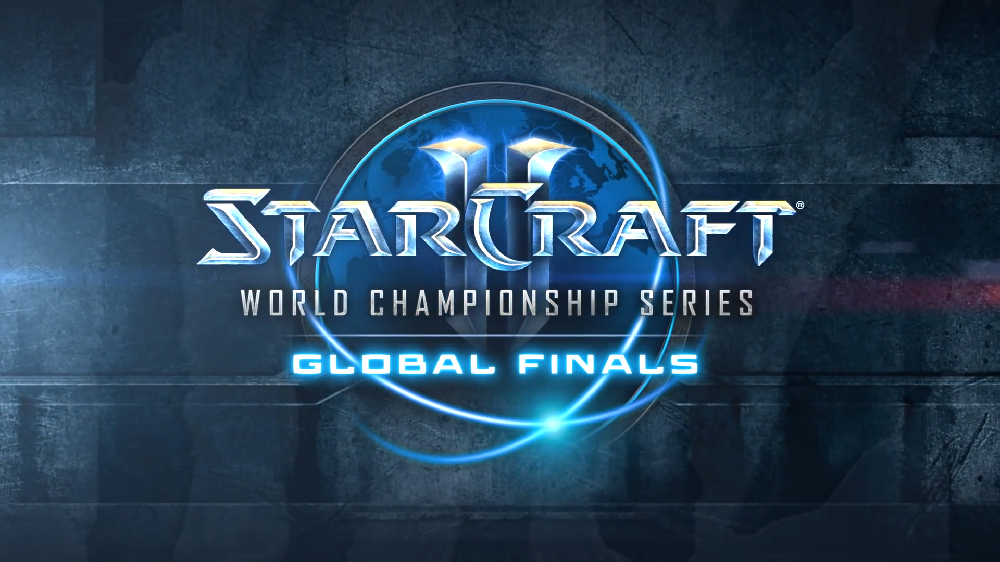

Le championnat mondial de StarCraft 2 est presque terminé!

Les finales auront lieu le et le à Anaheim, en Californie.
Les gagnants des demi-finales vont bientôt s'affronter! Neeb est impressionnant cette saison, car il est arrivé premier dans cinq circuits du championnat!
Les finales seront diffusées par la chaine StarCraft sur Twitch.